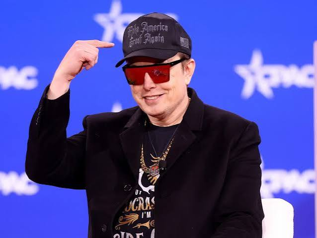

Elon Reeve Musk urodził się 28 czerwca 1971 roku w Pretorii w Republice Południowej Afryki. Od najmłodszych lat wykazywał ogromne zainteresowanie książkami oraz technologią. Był samoukiem – w wieku 10 lat zaczął uczyć się programowania na komputerze Commodore VIC-20. Mając zaledwie 12 lat, stworzył i sprzedał swoją pierwszą grę komputerową o nazwie Blastar za około 500 dolarów. Jego dzieciństwo nie należało jednak do najłatwiejszych – doświadczał przemocy rówieśniczej w szkole oraz trudnych relacji rodzinnych po rozwodzie rodziców.
Chcąc uniknąć obowiązkowej służby wojskowej w RPA oraz dążąc do realizacji swoich marzeń w Ameryce Północnej, Musk uzyskał paszport kanadyjski dzięki pochodzeniu swojej matki, Maye Musk. W wieku 17 lat przeniósł się do Kanady, gdzie imał się różnych prac fizycznych, a następnie rozpoczął studia na Queen's University. Po dwóch latach przeniósł się na University of Pennsylvania w USA, gdzie uzyskał dwa tytuły licencjackie: z fizyki oraz z ekonomii.
